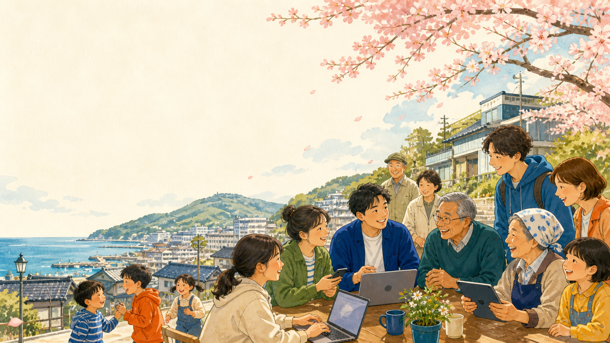
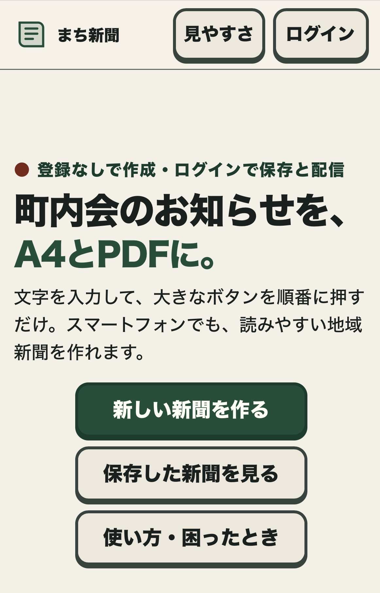
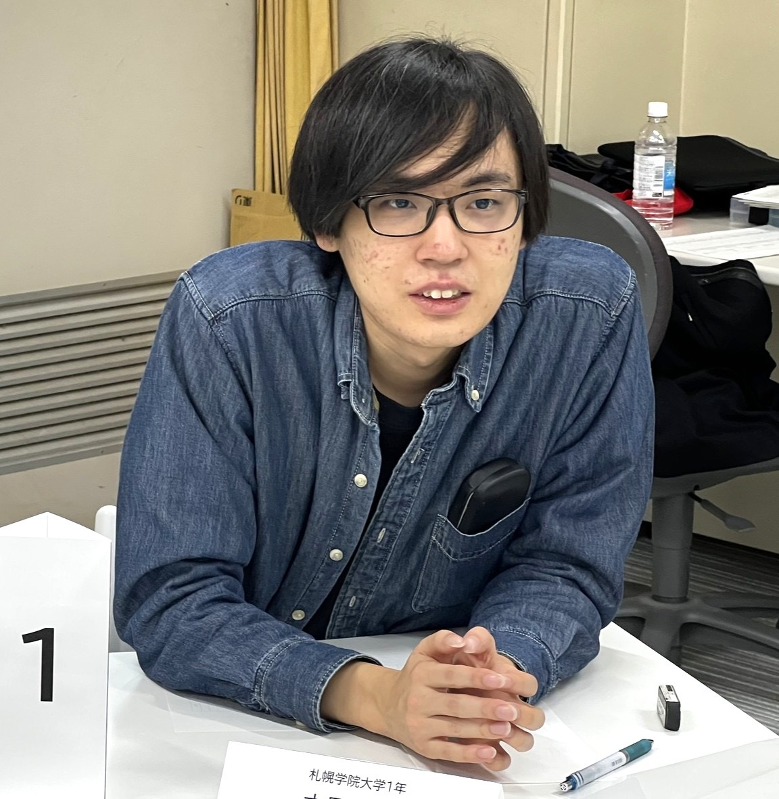
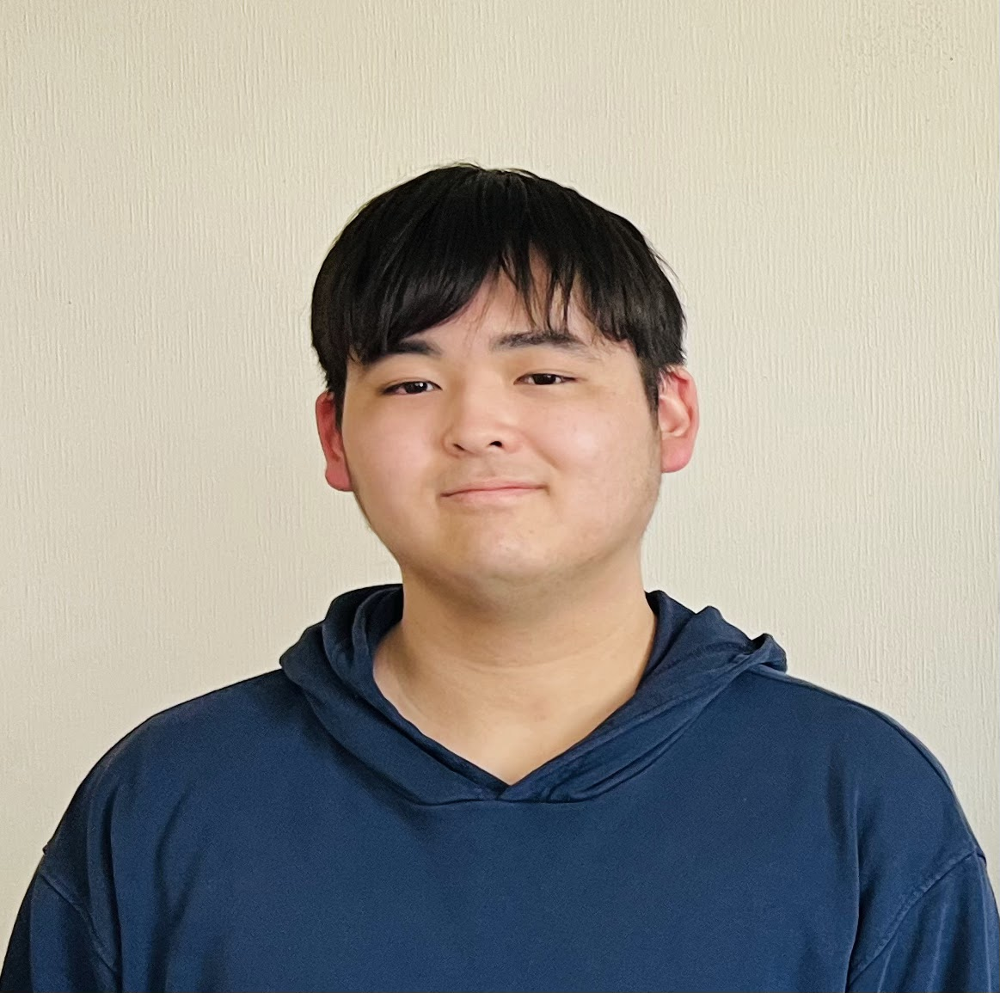
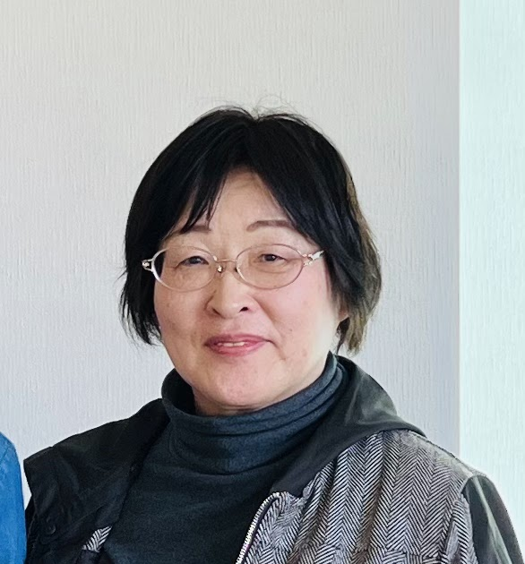

防災
いざという時の
備えと避難先

OTARU COMMUNITY UPDATE PROJECT
地域と対等に考え、デジタルの力で町会の困りごとを解決する若者たち。
共創の担い手として活動するのが、デジタルサポーターです。
ILLUSTRATION / DIGIKATSU TEAM
LATEST NEWS
01 / WHY WE STARTED
小樽の町内会はいま、人口減少と高齢化により、これまでと同じ方法では活動を続けにくい「構造的な危機」に向き合っています。
小樽市の高齢化率
つなぎたい地域の未来
でも、町内会は防災・防犯・見守り・住民同士の交流など、安心して暮らせる地域を支える大切な存在です。私たちは、デジタルを人と人をつなぐ「架け橋」として、町内会の仕組みを地域と一緒に再構築します。
小樽市の高齢化率42％⤴
小樽市の町会加入率70％⤵
いざという時の
備えと避難先
街路灯の管理や
子どもの見守り
住民同士をつなぐ
拠点
ゴミステーションの
維持管理や清掃
02 / YOUR MISSION
この3つは、デジタルサポーターが担う主な業務です。
あなたの得意な役割から、町会の困りごとを解決しよう。
「町内会まるわかりシート」や広報物をつくり、地域の活動をわかりやすく届ける。
InstagramやYouTubeで、地域の魅力や人のストーリーを新しい言葉で発信する。
スマホ教室で「できた！」を増やし、誰もが地域とつながれる場をつくる。
IT'S A WIN-WIN
デジタルサポーターは、単なる「お手伝い」ではありません。企画から対等に関わり、社会を動かす実践を積める共創のパートナーです。

地域課題に本気で向き合った経験が、自分だけのストーリーになる。
企画・デザイン・発信・対話。教室では学べない力が身につく。
世代をこえた出会いが、視野と可能性を大きく広げてくれる。
03 / MAKE IT CLEAR
「何をしているの？」「会費は何に使われるの？」——そんな疑問を、やさしいイラストとことばで見える化するのが町内会まるわかりシートです。
情報を開くことは、地域への信頼を育てること。ブラックボックスをなくし、住民が参加しやすい町内会を目指します。
シートを大きく見る ↗PDFをダウンロード ↓
FEATURE / MAKE NEWS EASIER
スマホで記事と写真を入力すると、回覧板をPDFファイルとして生成。そのままLINEに投稿することもできるアプリ「まちの新聞づくり」です。
高齢の役員にも使いやすい画面を目指し、回覧板の作成から配信までの業務負担を大きく減らします。現在はβ版で運用中。利用者からのご意見を参考に、今後もアップデートを続ける予定です。

04 / OUR PEOPLE
学生、デジタルサポーター、町内会の人。立場を超えた仲間が、それぞれの「なぜ？」を持って集まっています。

STUDENT LEADER
札幌学院大学 2年
STUDENT SUB-LEADER
北星学園大学 3年

DIGITAL SUPPORTER
朋優学院高等学校 3年

LOCAL PARTNER
新潮町会 会長
JOIN THE PROJECT
一回だけでもOK。見学からでもOK。自宅でできることからでもOK。
あなたのペースで、小樽の未来に参加してみませんか？
LINE公式アカウントのURLが決まり次第、このボタンを接続できます。